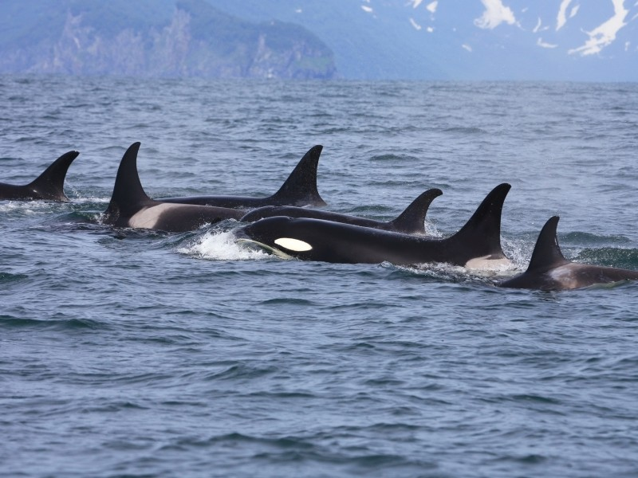
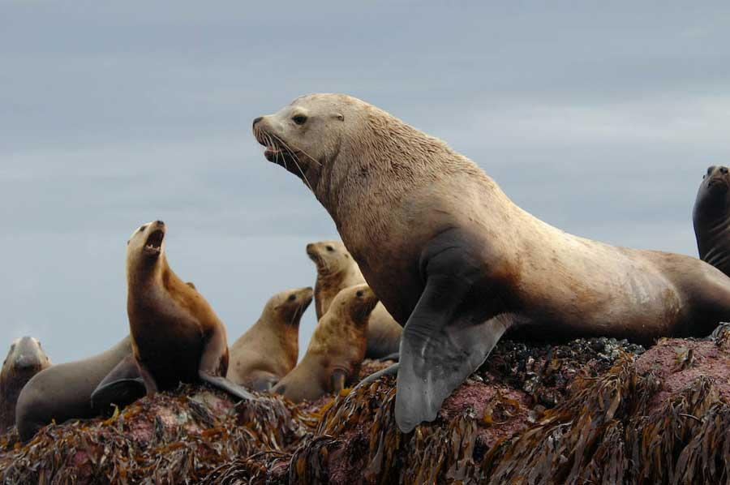
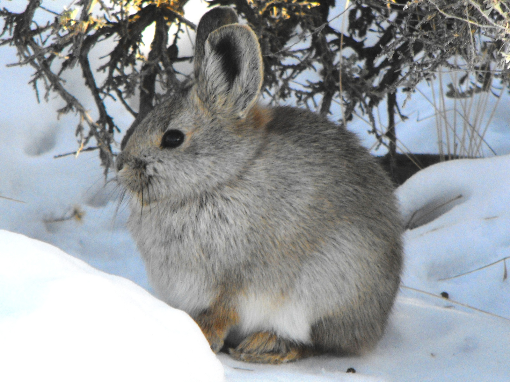
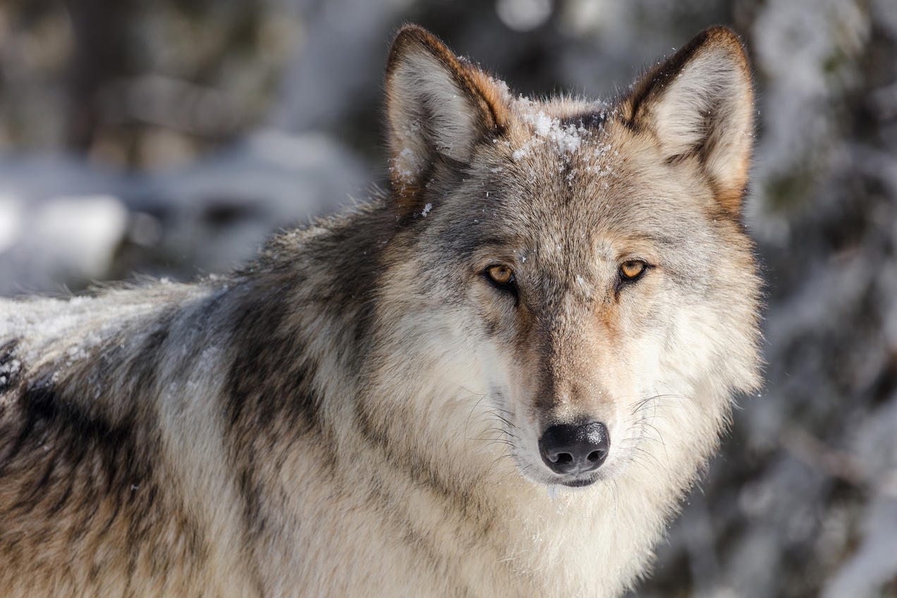
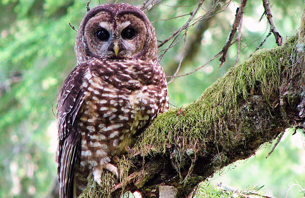

Animals of the PNW
A Wildlife Crisis
Endangered Animals
The Pacific Northwest is home to many endangered and threatened species. From the Sandhill Crane to the Oregon Spotted Frog, countless species are currently facing extinction. Increasing human actions such as poaching, greenhouse gas emissions, habitat destruction and disruption, and more increase the inevitability of losing the many precious species. It is vital that this rising issue is brought to attention, and that steps are immediately taken to combat this crisis.
Marine Life
The PNW's marine animals has been on a heavy decline as marine debris, overfishing, and hunting has increased leading to suffering marine ecosystems. Below are some examples of these endangered marine species:
| Chinook Salmon | Chinook salmon populations in the Pacific Northwest have been on an intense decline since the
late 1900's as rates
overfishing,
habitat loss and destruction, and climate change has risen.
|
| Puget Sound Orcas | The Pugest Sound Orca population has been declining. In the 1960s to 1970's, these orcas were a
main target to be captured to live in Sea World, causing a huge decimation in their population.
Since, the Puget Sound orca population has only continued dropping. There have been less orcas
to reproduce, and the remaining ones still face capture or
hunting, as well as increasing loss of their main food source: salmon.
 |
| Steller Sea Lions | For centuries, Steller Sea Lions have been victim to hunting for their fur and oil resources.
Still victim to the dangers of hunting, pollution, and habitat destruction and loss, Steller Sea
Lions are listed as an endangered species.
 |

Terrestrial Life
The PNW's terrestrial animals have historically faced issues like loss of habitat from deforestation, hunting, and more that have caused many species to be declared endangered.Below are some examples of these endangered species:
| Pygmy Rabbits | Pygmy rabbits are the smallest wild rabbits in North America, living in south-central
Washington. This species of wild rabbits, along with many others, have been declared endangered
as they continuously face habitat loss with
increasingly common, massive wildfires.
 |
| Gray Wolves | Gray wolves are a beautiful species of wild wolf, which has faced severe hunting and poisoning
from anti-wolf Americans. Beliefs that wolves are dangerous and should be exterminated has led
to the intense decline in the gray wolf's population in the PNW and throughout the country as
they are consistently targeted.
 |
| Northern Spotted Owl | The Northern Spotted Owl, facing loss and degradation of habitat, have been at a steady decline
of 2.9% per year in population. They also face competition with the Barred Owl, a more
aggressive species that has expanded westwards and taken over habitats of the Northern Spotted
Owl. With a decreasing population of about 15,000, this species has been declared threatened and
endangered.  |
More Information on Endangered Animals
There are countless species of animals that are threatened or endangered in the PNW today. To learn about more specific species and their threatened habitats, check out the video below!
Further Resources:
- University of Washington: climate change affecting human-wildlife interaction and conflict.
- Landscope: Information on the Washington State Wildlife Action Plan
- Earth Justice: Puget Sound Orcas: more on the endangerement of Puget Sound orcas, the species itself, and the government's work to protect the species.